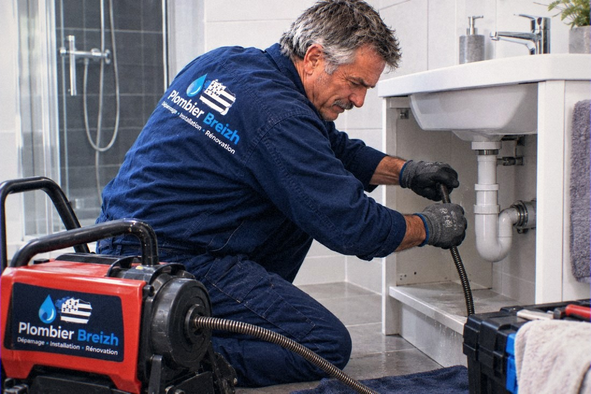
Débouchage
Une évacuation qui ralentit finit toujours par se boucher. On retire le bouchon avant le refoulement.
Une fuite, une canalisation bouchée ou un problème de plomberie ? Contactez Plombier Breizh pour votre intervention dans le Finistère.
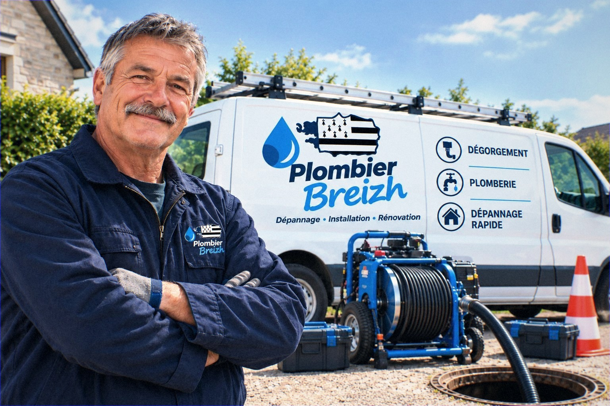
Finistère — 29Une urgence plomberie ?
Ne laissez pas une fuite ou une canalisation bouchée s’aggraver.
Entre Brest et Quimper, nous intervenons aussi bien dans des maisons anciennes que dans des appartements récents. Les installations n’ont rien à voir, et la méthode non plus : sur un réseau ancien, on regarde ce qui se passe dans la conduite avant d’attaquer au furet.
La plupart des appels concernent une évacuation qui ne suit plus. Un évier qui met dix minutes à se vider, une douche qui garde l’eau, des WC qui remontent : ce sont les premiers signes d’un bouchon en formation. Traité tôt, il part en quelques dizaines de minutes. Laissé de côté, il finit par bloquer toute l’évacuation du logement.
Décrivez-nous la situation au téléphone. On vous dit franchement s’il s’agit d’un débouchage simple, d’un dégorgement plus large ou d’un problème d’alimentation.
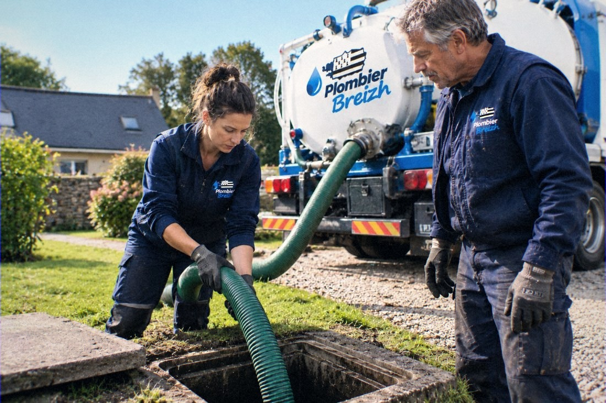
Un doute sur votre situation ? Appelez le 02 20 06 01 96, nous vous répondons directement.
Du simple évier bouché au dégorgement complet du réseau, voici ce que nous prenons en charge dans le Finistère.

Une évacuation qui ralentit finit toujours par se boucher. On retire le bouchon avant le refoulement.
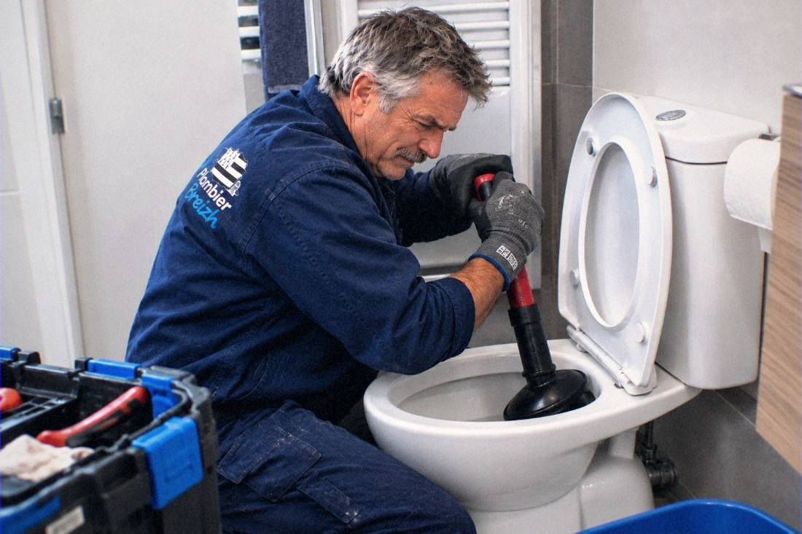
Les WC ne s’évacuent plus et vous n’osez plus tirer la chasse. On rétablit l’écoulement sans rien casser.
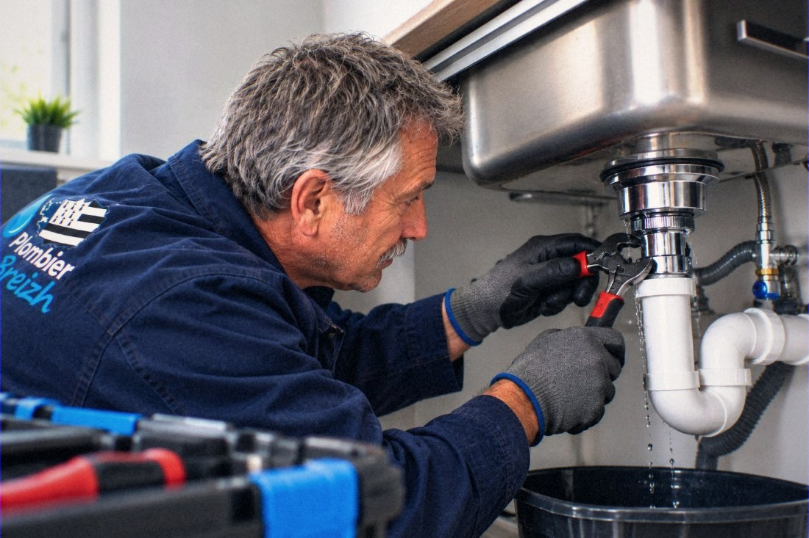
Les graisses et les résidus finissent par tout obstruer. On démonte, on nettoie le siphon, on contrôle l’évacuation.
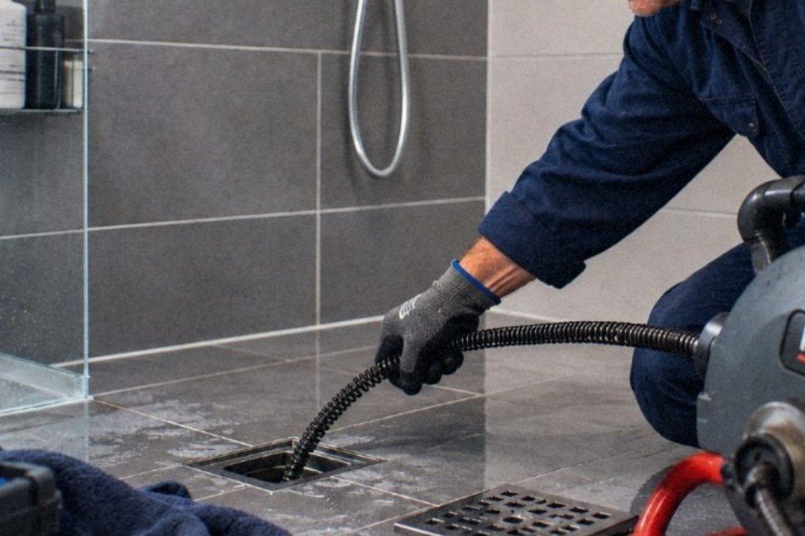
Cheveux, savon, calcaire : l’eau stagne dans le bac. On dégage la bonde et la conduite.
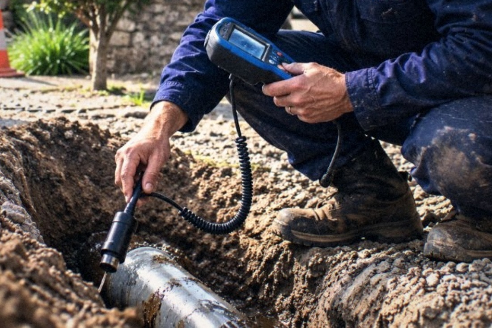
Une tache d’humidité, une facture qui grimpe sans raison : on localise la fuite avant d’ouvrir quoi que ce soit.
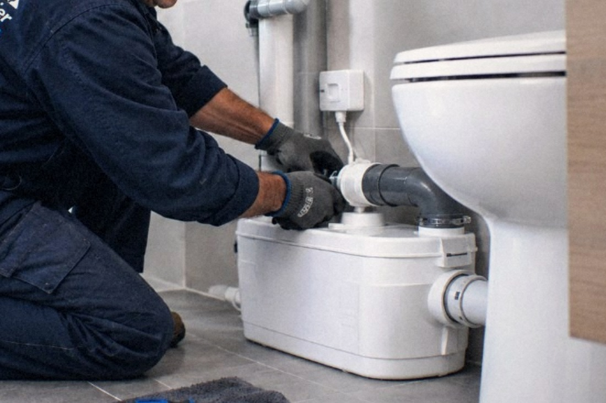
Robinet qui goutte, chasse d’eau bloquée, évacuation qui ne suit plus : on répare ce qui lâche au quotidien.
Un appel suffit pour lancer la prise en charge de votre intervention dans le Finistère.
Le matériel adapté fait toute la différence sur un bouchon. Avant de forcer, on cherche d’abord à comprendre où et pourquoi ça bloque.
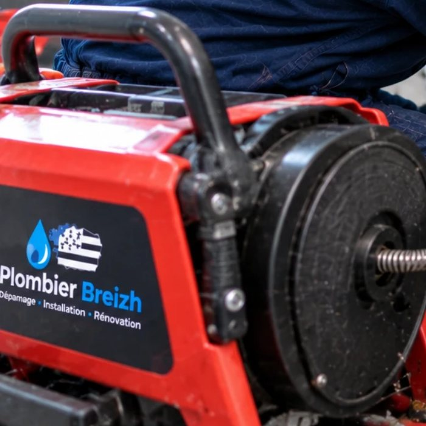
Pour percer les bouchons compacts installés en profondeur dans la conduite.
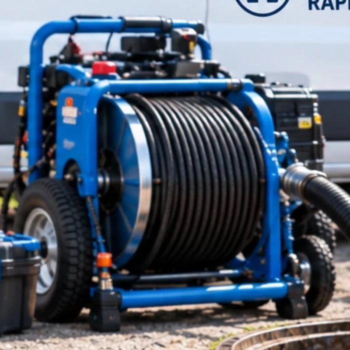
Pour décoller les dépôts accumulés sur les parois du réseau d’évacuation.
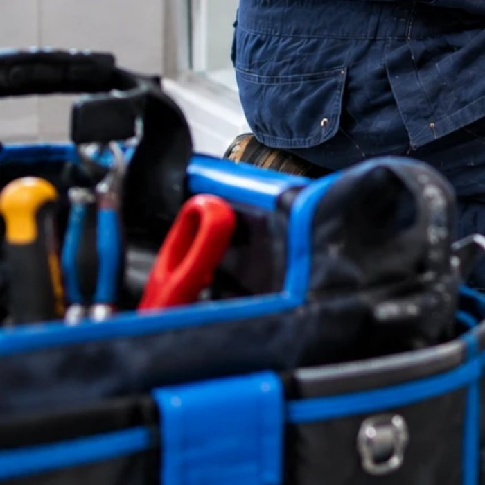
Pour réparer sur place : siphon, raccord, robinetterie, évacuation.
Ce sur quoi vous pouvez compter en appelant Plombier Breizh pour une intervention dans le Finistère.
Vous parlez à quelqu’un qui connaît le métier, pas à un standard. Le problème est cerné dès l’appel.
Furet électrique, haute pression, caméra d’inspection : le camion part avec ce que la situation demande.
Débouchage, dégorgement, fuite, dépannage : des interventions faites tous les jours, sans improvisation.
Vous savez ce qui a causé le problème et ce qui a été fait pour le régler.
Plombier Breizh intervient en Bretagne, avec une présence marquée dans le Finistère et le Morbihan.
02 20 06 01 96 pour un dépannage, un débouchage ou une urgence.
Votre satisfaction est au cœur de nos interventions.
Nous n’affichons que de vrais avis. Cette section accueillera les témoignages vérifiés de nos clients au fur et à mesure des interventions — aucun avis n’est inventé.
Vous avez fait appel à nous ? Écrivez-nous à contact@plombier-breizh.fr, votre retour sera publié ici.
Indiquez votre commune et le problème rencontré : nous vous rappelons pour organiser l’intervention dans le Finistère.
Pour une urgence, l’appel reste le plus rapide :
Appeler le 02 20 06 01 96Par email : contact@plombier-breizh.fr
Débouchage, dégorgement, fuite ou dépannage : appelez-nous, nous prenons le relais.
Communes couvertes notamment : Brest · Quimper · Morlaix · Concarneau · Landerneau · Douarnenez · Quimperlé · Châteaulin — et alentours.